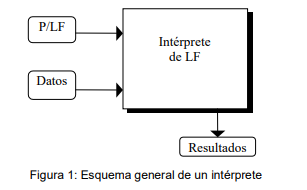
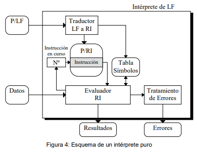
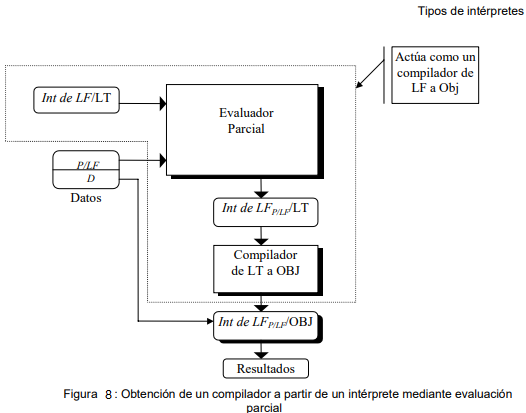

Intérpretes
Un intérprete es un programa que se encarga de analizar y ejecutar un programa en lenguaje fuente de manera simultánea.
Los intérpretes cuentan con dos entradas, las cuales son:
- Un lengua (P) escrito en lenguaje fuente (LF), esto se denota como P/LF
- Un conjunto de datos escritos en dicho lenguaje fuente
Con estos datos de entrada y mediante un proceso de interpretación se producen resultados.

Por lo general, los intérpretes se especializan en, al menos, dos idiomas, su lengua materna y una extranjera de su elección.
Estructura de un intérprete
La organización interna de la mayoría de los intérpretes se puede separar en los siguiente módulos:
• Traductor a Representación Interna: Toma como entra el código de un programa en lenguaje fuente, analiza y transforma el programa en su respectiva representación interna.
• Representación Interna (P/RI): Dentro de estas representaciones, los árboles sintácticos suelen ser los más usados, además de utilizar estructuras de pila para una mayor eficiencia.
• Tabla de símbolos: Es se crea y utiliza en el proceso de traducción, en esta se van almacenando los símbolos dependiendo de la complejidad del lenguaje. Además de que se pueden almacenar etiquetas para instrucciones de salto, o de cualquier tipo que se necesite utilizar para la etapa de evaluación.
• Evaluador de Representación Interna: Se llevan a cabo las acciones convenientes para obtener buenos resultados. Dentro de éste proceso de evaluación se debe considerar la posible aparición de errores.
• Tratamiento de errores: En éste proceso pueden aparecer errores que el intérprete debe considerar.
Dentro de la representación interna tenemos dos métodos fundamentales:
* Interpretación Iterativa: Se utiliza principalmente en lenguajes sencillos, en ellos se analiza y ejecuta cada expresión de manera directa, algunos ejemplos de esto son los códigos de máquinas abstractas o lenguajes de sentencia simple. Consiste en un ciclo básico de búsqueda,análisis y ejecución de instrucciones.

Las instrucciones se buscan en el almacenamiento, en ocasiones el usuario las ingresa. Enseguida se analizan sus componentes y se ejecutan. En la mayoría de los casos las instrucciones se ejecutan y descomponen en varios casos, una por cada instrucción.
* Interpretación Recursiva: Una primera fase de especificación semántica mediante la construcción de un intérprete prototipo que actúa como una especificación ejecutable y una segunda fase de implementación del compilador de dicho lenguaje. Los intérpretes recursivos no son apropiados para aplicaciones prácticas debido a su ineficiencia y se utilizan únicamente como prototipo ejecutable del lenguaje. El problema de especificar un lenguaje mediante un intérprete prototipo es decidir en qué lenguaje se implementa dicho intérprete. Dicho lenguaje debe ser suficientemente expresivo y no ambigüo para definir claramente cómo funcionan las diferentes construcciones.
Tipos de Intérpretes
• Intérpretes puros: Analizan y ejecutan sentencia a sentencia todo el programa fuente. Se utilizan desde la primera generación de ordenadores al permitir la ejecución de largos programas en ordenadores de memoria reducida, ya que sólo debían contener en memoria el intérprete y la sentencia a analizar y ejecutar en cada momento.
Una vez que este proceso ha finalizado, se envía al evaluador de instrucciones, este determina la instrucción siguiente a ejecutar. En caso de que no haya saltos se ejecuta la siguiente instrucción a la instrucción en curso.
• Intérpretes avanzados: En éste se incluye un paso previo al análisis. Posteriormente generan un lenguaje intermedio que ejecutan ellos mismos. De esta manera en casos de errores sintácticos, estos no pasan de la fase de análisis.
• Intérpretes incrementales: La idea es compilar aquellas partes estáticas del programa en lenguaje fuente, marcando como dinámicas las que no puedan compilarse. En tiempo de ejecución, el sistema podrá compilar algunas partes dinámicas o recompilar partes dinámicas que hayan sido modificadas. Estos sistemas acompañan el sistema que permite compilar módulos en tiempo de ejecución al código objeto generado.
• Evaluadores parciales: Con el uso de evaluadores parciales surge al considerar que la mayoría de los programas tiene dos tipos de entradas. El primer conjunto, se conoce como datos de entrada dinámicos (Din), mientra el segundo, serían los datos de entrada estáticos(Est). Dado un programa P, el proceso de evaluación parcial radica en construir otro programa especializado PEst para los datos estáticos de P. El programa PEst suele estar escrito en el mismo lenguaje fuente que P y se debe garantizar que cuando se le presenten los datos dinámicos produzca los mismos resultados que si se hubiesen presentado todos los datos al programa P original.
Ejemplo: Considérese el siguiente fragmento de programa P1 que toma la entrada de dos ficheros diferentes, fichEst y fichDin y escribe el resultado en la salida estándar.

Si el contenido de fichEst fuese siempre 5 12 7 -1 el evaluador parcial podría generar un programa especializado para dicho conjunto de datos, obteniendo P1Est:
Si se conoce de antemano que un programa P va a ejecutarse muchas veces con un mismo conjunto de datos Est pero diferentes datos Din, será más eficiente evaluar parcialmente P para obtener PEst y ejecutar luego Pest. Sin embargo, las cosas no son siempre tan fáciles, considérese que en el programa P1 se elimina la última sentencia «read» del bucle. Entonces el evaluador parcial, podría entrar en un bucle infinito intentando generar el programa especializado. Por este motivo, los evaluadores parciales deben realizar un complejo análisis del programa fuente para detectar que el proceso no genere un bucle infinito.
Para ello, supongamos que a la entrada del evaluador parcial se presenta el intérprete de un lenguaje de programación LF escrito en un lenguaje de transición LT, junto con un programa P escrito en LF. El evaluador parcial generará un intérprete especializado para el programa P en el lenguaje LT.
La evaluación parcial tiene otras aplicaciones interesantes en campos como el ray-tracing, modelización de mundos virtuales , reconocimiento de patrones, consultas a bases de datos, redes neuronales, etc.
• Compiladores “Just in Time”: Con la aparición de Internet surge la necesidad de distribuir programas de una forma independiente de la máquina permitiendo su ejecución en una amplia variedad de plataformas. La interpretación de códigos de bytes supone una demora en los tiempos de ejecución.
En este modelo, una unidad de compilación o clase se transmite en el formato de códigos de bytes, pero no se realiza la interpretación.

El sistema realiza dos acciones:
a) Compila la unidad B a código nativo.
b) Continúa la ejecución con el código nativo compilado de la unidad B
Las principales ventajas de la compilación Just in Time son:
1.- Los programas grandes contienen porciones de código que no son ejecutadas en una ejecución típica del programa. Puesto que la compilación Just in Time sólo traduce aquéllas porciones de código que se necesitan, se evita el tener que compilar código que no se va a utilizar.
2.- Esta técnica tiende a repartir el tiempo de compilación a lo largo de la ejecución del programa. El efecto producido al interrumpir la ejecución para compilar una unidad es similar al producido por la recolección de basura.
• Compilación continua: La compilación continua surge como un intento de mejorar la compilación «Just in Time». El sistema mezcla el proceso de compilación a código nativo con el proceso de interpretación.
Código: El código tiene una mezcla de código fuente y código nativo del programa. Inicialmente todo el código está sin compilar, a medida que el programa es ejecutado, el compilador genera traducciones a código nativo de las unidades de compilación.
Compilador: Traduce las unidades de compilación a código nativo. A medida que se finaliza la traducción de una unidad, la versión en código nativa se deja disponible al intérprete.
Intérprete: Comienza interpretando el código fuente, haciendo saltos a las versiones en código nativo a medida que éstas están disponibles.
Monitor: Se encarga de coordinar la comunicación entre los dos módulos anteriores.